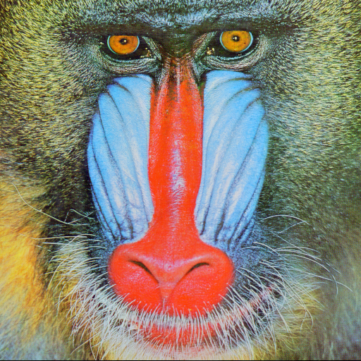
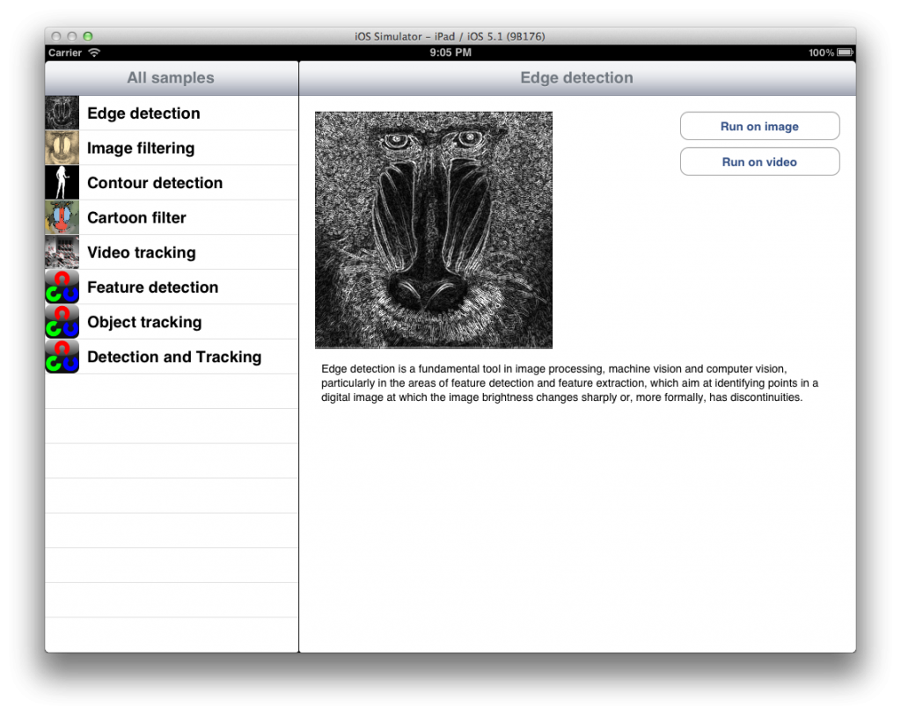

OpenCV Tutorial Part 7
After a long delay i’m happy to resume posting OpenCV tutorials in my blog. In Part 7 i will present you a new way of generation of icons for samples. Also i’ll show how to use NEON and assembly language to speed-up cv::transform function twice! Also there are three new samples i have to say few words about each.
Interface improvements
Default sample icons
I think each sample has to have it’s own unique icon image. Unfortunately, i’m not a cool graphic designer and i’m lazy. And i found brillant solution how to create unique icon for almost any sample with minimal efforts. Our sample will generate it for us! It’s so easy, right? We write a new sample that implements some cool effect. So it would be great if it’s icon will inform user about it. To do this we take a default image we use for icons and pass it through our sample. Result image is the best visual demonstration we can ever imagine. Let’s take a look on result of processing default icon with Cartoon Filter Sample: Default Image: 
Generated Cartoon Filter Icon
")
Also, these icons are now used in the rest of UI. The final picture looks much more user-friendly:

In case you looking for a code
While working on this chapter i noticed that UI-realted code has a lot of duplicates connected with converting of std::string to NSString, loading UIImage objects from bundle. To remove such duplicates i added a special facade class which performs all conversion and implements sample icon generation as described above.
SampleFacade interface
@interface SampleFacade : NSObject
- (id) initWithSample:(SampleBase*) sample;
@property (readonly) SampleBase * sample;
- (NSString *) title;
- (NSString *) description;
- (NSString *) friendlyName;
- (UIImage*) smallIcon;
- (UIImage*) largeIcon;
- (bool) processFrame:(const cv::Mat&) inputFrame into:(cv::Mat&) outputFrame;
- (UIImage*) processFrame:(UIImage*) source;
@end
Icons generation
When the data table is populated with a sample list it creates a cell for each sample. A cell contains a sample thumbnail image queried from [SampleFacade smallIcon].
- (UIImage*) smallIcon
{
if (!m_smallIcon)
{
if (self.sample->;hasIcon())
{
NSString * iconStr = [NSString stringWithStdString:self.sample->;getSampleIcon()];
m_smallIcon = [[UIImage imageNamed:iconStr] thumbnailWithSize:80];
}
else
{
UIImage * srcImage = [UIImage imageNamed:@"DefaultSampleIcon.png"];
m_smallIcon = [self processFrame:[srcImage thumbnailWithSize:80]];
}
}
return m_smallIcon;
}
Obviously, this method of generating sample icon image cannot be applied to any sample. It’s applicable only to samples that can process single image without any additional data input. For example, we can’t use this method to generate icon for video tracking, because it will give us exactly the same picture. But for samples that does manipulate with pixels it’s the ideal solution. ;
More friendly iPad interface
When in landscape mode iPad’s application interface shows list of samples and result of sample processing simultaneously. In the previous versions of the app, selecting new sample while previous was running had no effect. You had go back to sample information window and then click again “run” to start using new sample. Now it’s fixed - you can switch to any sample any time you want. Watch this great demonstration video: Implementation was very trivial - when user taps “Run on Video” or “Run on Image” button we save new view controller in DetailViewController’s private property:
- (void)prepareForSegue:(UIStoryboardSegue *)segue sender:(id)sender
{
if ([[segue identifier] isEqualToString:@"processVideo"])
{
VideoViewController * sampleController = [segue destinationViewController];
[sampleController setSample:currentSample];
self.activeVideoController = sampleController;
}
else if ([[segue identifier] isEqualToString:@"processImage"])
{
ImageViewController * sampleController = [segue destinationViewController];
[sampleController setSample:currentSample];
self.activeImageController = sampleController;
}
}
And modified configureView function now updates active image or video view if it’s not null:
- (void)configureView
{
// Update the user interface for the detail item.
if (currentSample)
{
self.sampleDescriptionTextView.text = [currentSample description];
self.title = [currentSample title];
self.sampleIconView.image = [currentSample largeIcon];
if (self.activeImageController)
[self.activeImageController setSample:currentSample];
if (self.activeVideoController)
[self.activeVideoController setSample:currentSample];
}
}
Performance optimization
Optimizing cv::transform with ARM NEON
Assembly language and architecture-specific code was always a subject of my special attention. After i got my first iPhone i started learning ARM Assembly and it’s SIMD engine called NEON. As a result of my first attempts to write something useful i wrote fast BGRA to Grayscale color conversion function. It was a long time ago, but this function is still actual. NEON-accelerated BGRA to Grayscale conversion is being used in this project too. In this section i will show you how to improve performance of the cv::transform function. Linear transform is useful function. In our samples we use it for Sepia effect for example. Also it can perform BGRA to Gray conversion without reducing number of image channels, adjust contrast and swap channels. A brief theory if you forgot what this function does. A cv::transform function multiplies each image pixel on 4x4 matrix and puts resulting vector to destination image. Input pixel is vector of 4 elements (unsigned bytes), each element contains channel intensity in following order: B, G, R, A. The matrix is represented by a 4x4 floating point (single precision) array. Our goal is to rewrite multiplication of 4x4 matrix on 4-element Vector. First, a wrapping function:
namespace cv
{
void neon_transform_bgra(const cv::Mat& input, cv::Mat& result, const cv::Mat_& m)
{
assert(input.type() == CV_8UC4);
if (result.rows != input.rows || result.cols != input.cols || result.type() != CV_8UC4)
{
result.create(input.rows, input.cols, CV_8UC4);
}
//result = input.clone();
//initSameSizeAlignedIfNecessary(m, result);
//cv::Mat trans;
//cv::transpose(m, trans);
float * matrix = reinterpret_cast<float*>(m.data);
int v[4];
int out[4];
for (int row = 0; row < input.rows; row++)
{
cv::Vec4b * srcRow = reinterpret_cast<cv::Vec4b*>(input.row(row).data);
cv::Vec4b * dstRow = reinterpret_cast<cv::Vec4b*>(result.row(row).data);
for (int col = 0; col < input.cols; col++)
{
const cv::Vec4b& src = srcRow[col];
cv:Vec4b& dst = dstRow[col];
v[0] = src[0];
v[1] = src[1];
v[2] = src[2];
v[3] = src[3];
neon_asm_mat4_vec4_mul(matrix, v, out);
dst[0] = cv::saturate_cast<unsigned char>(out[0]);
dst[1] = cv::saturate_cast<unsigned char>(out[1]);
dst[2] = cv::saturate_cast<unsigned char>(out[2]);
dst[3] = cv::saturate_cast<unsigned char>(out[3]);
}
}
}
}